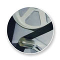
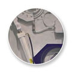
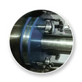
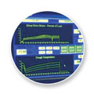

It all starts with the mix.
Read About Our Full Lineup of Industry Leading Horizontal Industrial Mixers Below:

Roller Bar Mixers
It all starts with the mix. And, with our tilt bowl roller bar industrial mixers, we know that a ‘good start’ means a lot of things at once, such as: efficient mixing time, proper aeration, temperature control and a dough that comes out ‘just right’. All of these things result in a superior product achieved at a lower cost per pound. CMC America mixers are better because of the superior ingredients and materials we use to manufacture them.
All CMC America mixers are USDA accepted, meet OSHA & ANSI standards and can be FDA and CE conformant.
- USDA Accepted
- OSHA & ANSI
- FDA / CE Conformant
Reduced Energy Consumption via Patented Technology.
Our secret? Efficient transition from Newtonian to non-Newtonian flows. Our mixer design improves the aeration characteristics of the dough and leads to the fastest mixing times available in horizontal tilt-bowl mixers, in as little as 5 to 7 ½ minutes per batch for a wide variety of yeast raised dough applications. This, in turn, reduces energy consumption.
Patented Bowl – Agitator Configuration & Jacketing
From the unique way we place our agitators to the way we control dough temperatures, our roller bar technology leads to full absorption for fast development of a uniform dough cell structure and gluten network. Yes. This leads to faster mixing times. But, equally important, the quality of the dough is expertly maintained for each batch.
Custom Manufactured With Highest Quality Components Available
Every baker knows that great results come from superior ingredients. CMC-America’s devotion to quality is exhibited in the craftsmanship we have cultivated over 125 years of combined experience, as well as the superior components of manufacture. Our industrial mixers are durable and reliable. Electric drives can be customized for any commercial operation in any geography.
Want to download or print more information about our Tilt Bowl Roller Bar Mixers? Click the button below to open the .pdf document. You can then download and print the detailed information!
Single Sigma Mixers
It all starts with the mix. When you place a CMC-America Single Sigma at the head of your operation, you are placing your trust in a mixer that is built to meet the industry’s most challenging demands. Our agitator’s design and angle of operation deliver the unbeatable combination of superior mixing procedures and the fastest mixing time in the market.
All CMC America industrial mixers are USDA accepted, meet OSHA & ANSI standards and can be FDA and CE conformant.
- USDA Accepted
- OSHA & ANSI
- FDA / CE Conformant
Not All Agitators are Created Equal. Ours are Superior by Design.
Our Sigma agitator gently rotates and moves the dough mass from each end of the bowl to the center – and back again – in a continuous mixing action with a minimum of heat rise in the dough. The result? Homogeneous distribution of ingredients efficiently achieved.
Equally Effective for Biscuit/Cracker and/or Yeast Raised Hearth Bread Applications
CMC-America’s Single Sigma Mixers are can be found in operations producing: Rotary Cookies, Biscuits, Pie Dough, Cheese Cake, Corn Tortillas, Health Food Bars, Batters, Crackers, Hearth Breads, Muffins and Fillings. Count on our single sigmas for maximum adaptability for maximum operational quality, efficiency and versatility.
Custom Manufactured with Highest Quality Components Available
Every baker knows that great results come from superior ingredients. CMC-America’s devotion to quality is exhibited in the craftsmanship we have cultivated over 125 years of combined experience, as well as the superior components of manufacture. The single arm sigma spiral mixer boasts an agitator configuration that delivers dependable results.
Want to download or print more information about our Single Sigma Mixers? Click the button below to open the .pdf document. You can then download and print the detailed information!
Double Sigma Mixers
It all starts with the mix. Our Double Sigma mixers are designed and manufactured for the creation of homogeneous dough mass at shortest mixing times. Perfect for short doughs, Granolas, Pretzels, Frostings, Cremes, Batters and a wide variety of other recipes, the superior CMC-America Double Sigma is engineered to perform.
All CMC America mixers are USDA accepted, meet OSHA & ANSI standards and can be FDA and CE conformant.
- USDA Accepted
- OSHA & ANSI
- FDA / CE Conformant
Rugged and Reliable, Like All Our Mixers
Boasting solid stainless steel support frame and legs, Monoblock high-service-factor gearbox and an agitator to bowl configuration that provides a better, faster mix, our Double Sigma will keep your operation producing year-in, year-out. With our patented jacketing system, heavy duty meets high efficiency, with dough temperatures as low as 14° C/57°F.
The Bigger the Batch, the Happier You Will Be
The Double Sigma is ideal for high capacities. At any batch size, the Double Sigma delivers both powerful execution and increased energy savings. Coupled with CMC- America’s well known reputation for low-maintenance-cost mixers, the benefits to the operation continue and grow.
Custom Manufactured with Highest Quality Components Available
Every baker knows that great results come from superior ingredients. CMC-America’s devotion to quality is exhibited in the craftsmanship we have cultivated over 125 years of combined experience, as well as the superior components of manufacture. Our double arm sigma mixers are strong and dependable.
Want to download or print more information about our Double Sigma Mixers? Click the button below to open the .pdf document. You can then download and print the detailed information!
EXP Mixers
At CMC-America, we have served the needs of the retail bakery as energetically as we serve industrial-scale baking operations. In order to bring the benefits of horizontal dough mixing to smaller scale operations, we created the EXP line of mixers.
All CMC America mixers are USDA accepted, meet OSHA & ANSI standards and can be FDA and CE conformant.
- USDA Accepted
- OSHA & ANSI
- FDA / CE Conformant
- Made in USA
Horizontal Mixing Performance for Commercial Operations
EXP Horizontal Mixers do not develop stratified doughs; layers of differing quality throughout the dough mix commonly found with spiral mixing. What’s more, EXP mixers mix as fast – or faster – than single spiral mixers.
A More Reliable Platform with Lower Maintenance Costs.
The made-in-USA EXP is not prone to unexpected agitator failures or bearing wear that tend to stop productions relying on different mixing technology.
Custom Manufactured With Highest Quality Components Available
Every baker knows that great results come from superior ingredients. CMC-America’s devotion to quality is exhibited in the craftsmanship we have cultivated over 125 years of combined experience, as well as the superior components of manufacture.
Want to download or print more information about our EXP Mixers? Click the button below to open the .pdf document. You can then download and print the detailed information!
Custom Mixers Manufactured to Your Requirements

Poly Belt Drive

Parker Hydraulics

Delrin / Rulon Shaft

Batch Quality Controller
VFD Drive
High Turbulence Jacketing
Call and Ask About Our Inventory of Used Mixers.
The same quality and durability CMC America is known for — without the new-equipment price tag.